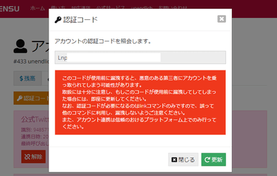
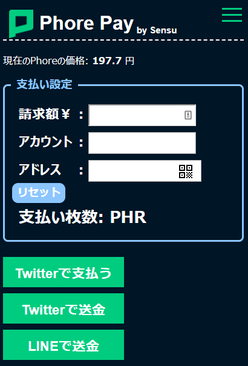
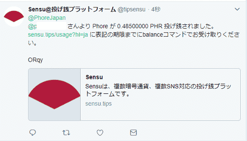
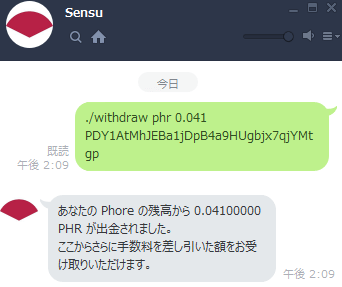

Phore Pay
販売者用ガイド
0. Phore Payとは？
Phore PayとはSensuを用いたTwitter/LINEでの支払い支援サービスです。
必要なもの
- ネットワークに接続されているタブレット or スマートフォン(大画面が望ましい)
- 店舗としてTwitterアカウントを持っていること
- PhoreアドレスをQRコードとして印刷されていること
のいずれかが満たされていれば送金が可能です。
1. Twitterアカウントに送金
a. ウェブサイトからSensuへ登録
Sensu利用規約をお読みの上、同意できる方は
こちらよりアカウントを作成しましょう。入力が完了したら、作成ボタンをクリックしましょう。作成が完了したら、次の画像のようにログインが完了するはずです。

出来ていなければ、画面上部にあるメニューよりログインを選択してください。
b. Twitter/LINEとSensuで連携
ログインが完了したら、画面上部のメニューよりIDになっている部分をクリックしましょう。
すると、上のような画面になるはずです。
ここから、連携タブをクリックし、認証コードボタンをクリックしましょう。

の認証コードをコピーしましょう。
Twitterの場合
@tipsensuより、Twitter上で@tipsensuへダイレクトメールを次のような文面で送信しましょう。
link 認証コード
送信後、次のような返事が返ってきます。

Twitterとの連携が出来ました。次にLINEとの連携を行いましょう。
LINEの場合
このリンクよりSensuのLINE@を友達登録しましょう。
友達登録が完了したら、同じ手順で認証コードを発行し、次の文面を送信してください。
./link 認証コード
送信後、次のような返事が返ってきます。

LINEとも連携が完了しました。
c. 残高を確認してみよう
認証が完了したら、実際に残高を確認してみましょう。
Twitterでは
@tipsensu balance phr
LINEでは
./balance phr
と送信することで、Phoreの残高を確認できます。
d. Twitterアカウント名へ支払

請求する日本円、支払い先の(店舗などの)Twitterのアカウント名を@から入力し、"Twitterで支払いボタン"をクリックすると"Twitterで支払う"ボタンとQRコードが出力されます。
- 利用者がページを開いている場合
"Twitterで支払う"ボタンを押しツイートしていただきましょう
- 店舗がページを開いている場合
提示されるQRを読み込みツイートしていただきましょう
ツイートが完了すると、次のような返信が届きます。

これを支払い者の画面で確認できれば、支払いは完了です。残高をTwitter/LINE上で確認してみましょう。
一番上へ
アドレスに直接送金
Sensuからアドレスを取得する
上よりSensuへ登録し次のコマンドを入力し、アドレス(Pから始まる)を取得する。アドレスを取得したら、予測変換に入れる/こちらでQRコードにし、印刷などをしすぐ入力できるようにしましょう。
Twitter:
deposit phr
LINE:
./deposit phr
Androidウォレットからアドレスを取得する
こちらよりインストールできます。上と同じく、アドレスをウォレット内で取得し、予測変換などに入れるか/印刷しましょう。
支払ってもらう
支払い設定の枠内の、請求額(日本円), 支払い先(Pから始まるPhoreアドレス)を入力しましょう(図例)。
Twitter上で送金したいか、LINE上で送金したいか利用者に確認の上、"Twitterで送金"or"LINEで送金"ボタンをクリックすると、"Twitterで送金"or"LINEで送金"ボタンとQRコードが出力されます。
- 利用者がページを開いている場合
"Twitterで送金"or"LINEで送金"ボタンを押しツイート/メッセージ送信していただきましょう
- 店舗がページを開いている場合
表示されたQRを読み込んでもらいツイート/メッセージ送信していただきましょう
ツイートが完了すると、次のような返信が届きます。

LINEの場合、

Sensuからリプライや返答が返ってきていれば、送金は完了しています。
これを確認後、残高をご確認ください(反映まで長くて5分ほどかかります)。
一番上へ
FAQ
Q. Sensuから返事が返ってこない
A. よりSensuが停止中か、稼働中かご確認ください。
Q. 返事が来ていない場合、支払いはされているか？
A. されておりません。そのような場合、大変お手数ですが現金など他の支払い方法で支払っていただいてください。
一番上へ